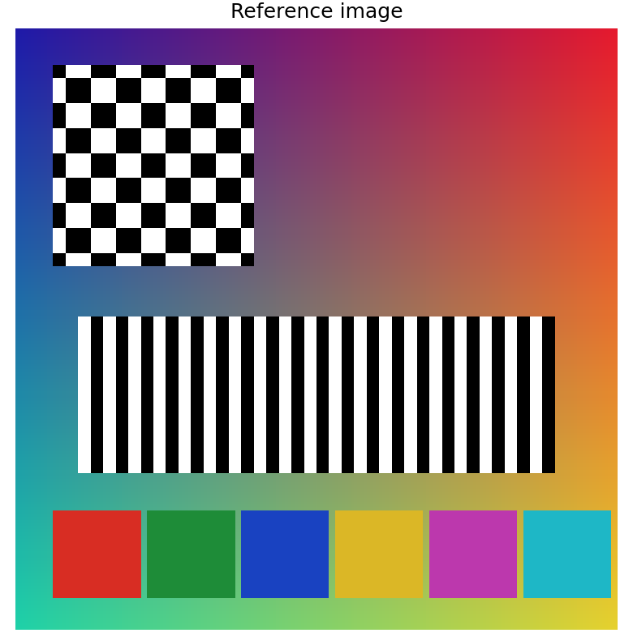
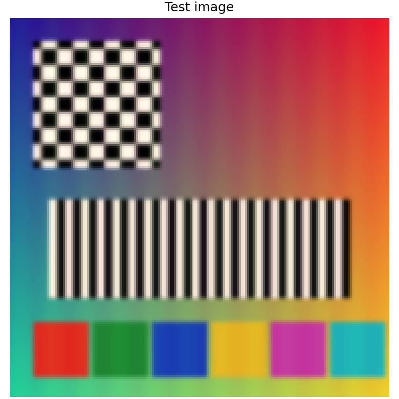
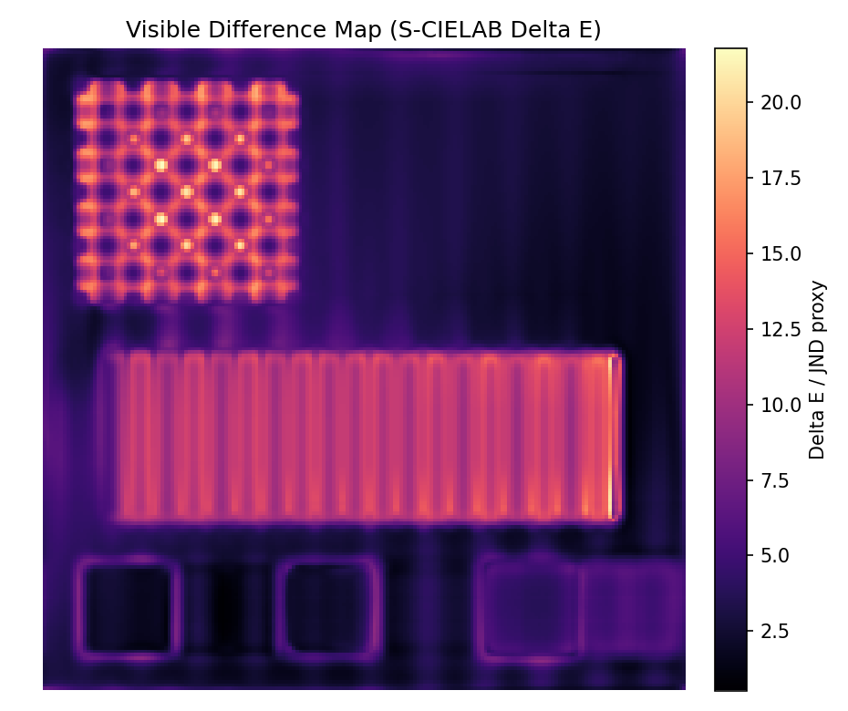
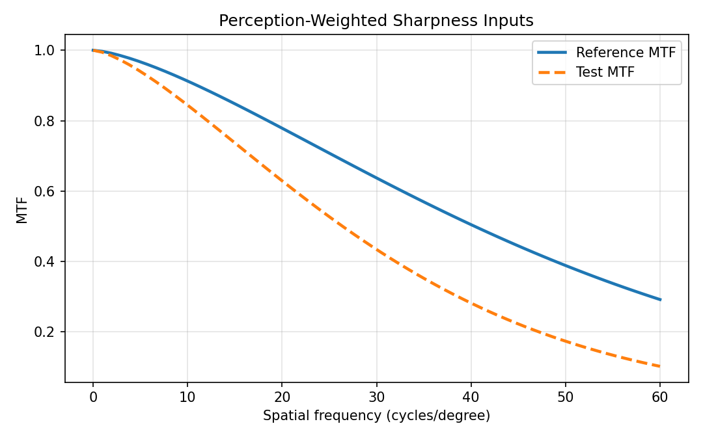

Perception Metric Implementation Report
This report demonstrates the new high-level perception API. It is not a new ISP algorithm; it wraps existing numeric, color, SCIELAB, and sharpness helpers into viewing-condition aware evidence.
Architecture
perception.py sits above metrics.py, scielab.py, and camera quality helpers. The API requires explicit viewing assumptions so that color difference, JND maps, sharpness, and artifact proxies are not reported as context-free scalars.
Important: a single global "perception score" is intentionally not reported. Color, visible difference, sharpness, and artifacts are separate failure modes and should remain inspectable.
Viewing Configuration
| Metric | Value | Units |
|---|---|---|
| Viewing distance | 0.5 | m |
| Pixel pitch | 250 | um |
| Pixels per degree | 34.9066 | px/deg |
| Display peak luminance | 100 | cd/m^2 |
| JND Delta E threshold | 1 | Delta E |
| Visible Delta E threshold | 2.3 | Delta E |
Evidence Images




Visible Difference
| Metric | Value | Units |
|---|---|---|
| Mean Delta E | 6.13956 | Delta E |
| 95th percentile Delta E | 13.1448 | Delta E |
| Max Delta E | 21.7906 | Delta E |
| Mean JND | 6.13956 | JND |
| Visible pixel fraction | 0.879499 | fraction |
Quality Summary
| Metric | Value | Units |
|---|---|---|
| MAE | 0.0867393 | normalized |
| RMSE | 0.14275 | normalized |
| PSNR | 16.9085 | dB |
| Mean luminance error | -5.78118 | cd/m^2 |
| RMS luminance error | 18.1132 | cd/m^2 |
| Mean color Delta E | 7.35762 | Delta E |
| Reference ISO acutance | 0.916111 | unitless |
| Test ISO acutance | 0.855695 | unitless |
| Reference SQRI | 98.5038 | unitless |
| Test SQRI | 96.1375 | unitless |
| High-frequency error fraction | 0.446552 | fraction |
Implemented Public API
Primary functions: perception_config, pixels_per_degree, image_to_luminance, perception_image_metrics, perception_color_metrics, perception_visible_difference_map, perception_sharpness_metrics, perception_artifact_metrics, perception_compare, and perception_report.
MATLAB-style aliases are also exposed at the package root, for example perceptionConfig, pixelsPerDegree, and perceptionVisibleDifferenceMap.